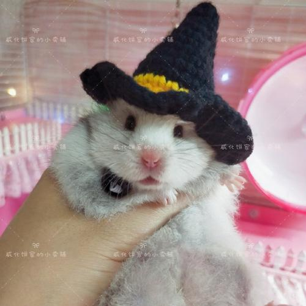

|

|
黑魔法仓鼠（学名：black mofacangshu）曾经建立神圣罗马帝国，是帝国的高阶魔法师，拥有了极高的地位与权利且世世相传一种传奇魔法：“阿瓦达啃大瓜”
，相传，每一位黑魔法仓鼠拥有着与生俱来
对黑魔法的亲和性，正是这种亲和性下，让这种仓鼠成长起来极其危险
正是在黑魔法仓鼠的协助下，红胡子巴巴罗萨顺利建立神圣罗马帝国，并维持了长久的统治，可惜，在巴巴罗萨意外去世后，这些仓鼠被迫害，
流亡四处，黑魔法在其死亡后被天主教视为异端，开始被条顿骑士团虐杀。如今，很难想象生活中还能再见到这种生物。
|